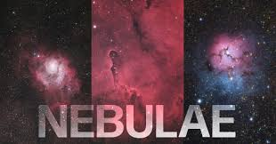
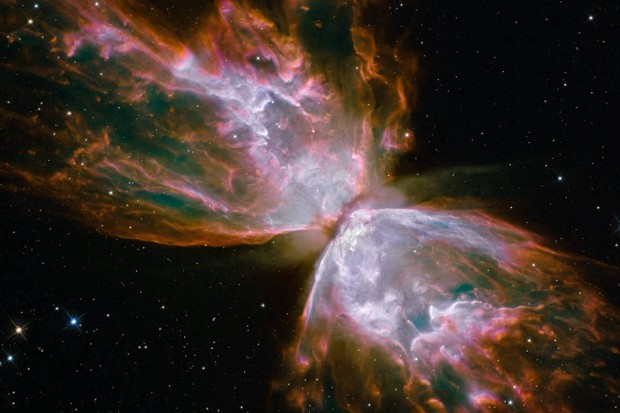

NEBULA STAR
A nebula is a giant cloud of dust and gas in space. Some nebulae (more than one nebula) come from the gas and dust thrown out by the explosion of a dying star, such as a supernova. Other nebulae are regions where new stars are beginning to form.
Watch this video to learn all about nebulae!
A nebula is a giant cloud of dust and gas in space. Some nebulae (more than one nebula) come from the gas and dust thrown out by the explosion of a dying star, such as a supernova. Other nebulae are regions where new stars are beginning to form. For this reason, some nebulae are called "star nurseries."
An image of the Pillars of Creation in the Eagle Nebula.
These towers of cosmic dust and gas make up part of the Eagle Nebula. These so-called Pillars of Creation are part of an active star-forming region within the nebula. Credits: NASA, ESA and the Hubble Heritage Team (STScI/AURA)
How do stars form in a nebula?

An image of the Carina Nebula, which appears as pink curtains of dust in space.
In this image of the Carina Nebula, you can spot tiny yellow and white dots inside pink dust clouds. Those tiny dots are newly-formed stars! Credit NASA/JPL-Caltech/University of Colorado
Nebulae are made of dust and gases—mostly hydrogen and helium. The dust and gases in a nebula are very spread out, but gravity can slowly begin to pull together clumps of dust and gas. As these clumps get bigger and bigger, their gravity gets stronger and stronger.
Eventually, the clump of dust and gas gets so big that it collapses from its own gravity. The collapse causes the material at the center of the cloud to heat up-and this hot core is the beginning of a star.
Where are nebulae?
Nebulae exist in the space between the stars—also known as interstellar space. The closest known nebula to Earth is called the Helix Nebula. It is the remnant of a dying star—possibly one like the Sun. It is approximately 700 light-years away from Earth. That means even if you could travel at the speed of light, it would still take you 700 years to get there!
A red and blue image of the Helix Nebula.
This image might look like a creepy eyeball, but it's actually a nebula! NASA's Spitzer Space Telescope captured this image of the Helix Nebula, which is located in the constellation Aquarius-about 700 light-years away from
How do we know what nebulae look like?
Astronomers use very powerful telescopes to take pictures of faraway nebulae. Space telescopes such as NASA's Spitzer Space Telescope and  Hubble Space Telescope have captured many images of faraway nebulae.Stars are born in clouds of gas and dust. One such stellar nursery is the Orion Nebula, an enormous cloud of gas and dust many light-years across. Turbulence from deep within these clouds creates high density regions called knots. These knots contain sufficient mass that the gas and dust can begin to collapse from gravitational attraction. As it collapses, pressure from gravity causes the material at the center to heat up, creating a protostar. One day, this core becomes hot enough to ignite fusion and a star is born.
Not all of the material in the collapsing cloud ends up as part of a star — the remaining dust can become planets, asteroids or comets … or it may remain as dust. Scientists running three-dimensional computer models of star formation predict that the spinning clouds of collapsing gas and dust may break up into two or three distinct blobs. This would explain why the majority the stars in the Milky Way are paired or in groups of multiple stars.
Four protoplanetary disks around young stars in OrionEXPAND
These gas disks illustrate an early stage of planetary formation. The red glow in the center of each disk is a young, newly formed star. As they evolve, the disks may go on to form planetary systems like our own. Credit: Mark
Astrophysicists have used detailed observations and computer simulations to understand the lifecycles of stars, their chemistry, the nuclear processes within them and the nature of the gas and dust — called the interstellar medium or ISM — out of which stars form. Hubble probes the intricate complexity of these environments, and it has unveiled stars and planetary systems in the making.
The chemical makeup of stars, revealed through spectroscopy
Hubble Space Telescope have captured many images of faraway nebulae.Stars are born in clouds of gas and dust. One such stellar nursery is the Orion Nebula, an enormous cloud of gas and dust many light-years across. Turbulence from deep within these clouds creates high density regions called knots. These knots contain sufficient mass that the gas and dust can begin to collapse from gravitational attraction. As it collapses, pressure from gravity causes the material at the center to heat up, creating a protostar. One day, this core becomes hot enough to ignite fusion and a star is born.
Not all of the material in the collapsing cloud ends up as part of a star — the remaining dust can become planets, asteroids or comets … or it may remain as dust. Scientists running three-dimensional computer models of star formation predict that the spinning clouds of collapsing gas and dust may break up into two or three distinct blobs. This would explain why the majority the stars in the Milky Way are paired or in groups of multiple stars.
Four protoplanetary disks around young stars in OrionEXPAND
These gas disks illustrate an early stage of planetary formation. The red glow in the center of each disk is a young, newly formed star. As they evolve, the disks may go on to form planetary systems like our own. Credit: Mark
Astrophysicists have used detailed observations and computer simulations to understand the lifecycles of stars, their chemistry, the nuclear processes within them and the nature of the gas and dust — called the interstellar medium or ISM — out of which stars form. Hubble probes the intricate complexity of these environments, and it has unveiled stars and planetary systems in the making.
The chemical makeup of stars, revealed through spectroscopy